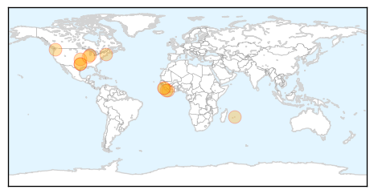

30 Day Trends
Web: 0 alerts, 0 warnings
Twitter: 0 alerts, 0 warnings
6 new deaths (11296 total)
305 new cases (28408 total)
Top Articles:
- 1.000
- Ebola patient told hospital he had been to Liberia
- 0.999
- US CDC Director Holds Talks With Liberian Officials
- 0.996
- They were so close to Ebola, yet these people remained healthy 10 in household who had contact with victim Duncan did not contract the disease
- 0.994
- Hospital: Child remains in 'stable' condition, checked for Ebola virus
- 0.993
- Liberia’s president visits Seattle with thanks, warnings on Ebola
- 0.991
- America Set To Dispatch Troops to West Africa to Fight the Ebola Epidemic
- 0.987
- Will changing healthcare access prevent the outbreak of a global pandemic?
- 0.953
- SLeMSA Ends Two Days Workshop on Health
- 0.944
- ‘Human security depends on health security,’ Ban says, calling on nations to …
- 0.935
- 6 Mauritians Coming From Africa Placed in Isolation
- 0.818
- Our opinion: Ebola-type reaction to shootings needed
- 0.719
- youths in sierra leone
Top Tweets:
- 0.569
- Our opinion: Ebola-type reaction to shootings needed - Dubuque Telegraph Herald http://t.co/uNvG3QbFMo ebola EVD
- 0.569
- Our opinion: Ebola-type reaction to shootings needed - Dubuque Telegraph Herald http://t.co/JmDaqWqJmY ebola EVD
- 0.540
- Liberia now better prepared for Ebola president says during Seattle visit - The Seattle Times http://t.co/rKzmLcnghJ ebola EVD
Web/News Articles

Tweets

Human Impact
Article Locations
Article Confidences